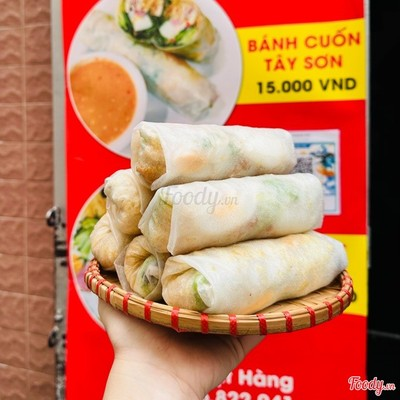

Về Quỳnh Chi - Bánh Cuốn Tây Sơn

Câu chuyện của quán
Bánh cuốn Tây Sơn là món ăn dân dã gắn liền với vùng đất Bình Định - nơi sinh ra phong trào Tây Sơn lừng lẫy. Khác với bánh cuốn miền Bắc hay bánh ướt miền Trung, bánh cuốn Tây Sơn có lớp bánh dày dặn, cuốn cùng rau sống, thịt nướng, trứng, ram giòn, chấm cùng chén nước mắm đậu phộng beo béo - hương vị đặc trưng không lẫn vào đâu được.
Quán Quỳnh Chi ra đời từ tình yêu với hương vị quê nhà Bình Định. Mỗi ngày, chúng tôi dậy sớm chọn nguyên liệu, tráng từng lá bánh, pha từng chén mắm đậu phộng theo đúng công thức được gìn giữ nhiều năm nay, mong muốn mang đến cho khách hàng những cuốn bánh nóng hổi, tươi ngon như đang ở giữa lòng Bình Định.
Vì sao chọn chúng tôi?
Nguyên liệu tươi mỗi sáng
Rau, thịt, trứng được chọn lựa và sơ chế mỗi sáng, không để qua đêm, đảm bảo độ tươi ngon trong từng cuốn bánh.
Công thức gia truyền
Nước mắm đậu phộng và cách tráng bánh theo đúng công thức truyền thống Tây Sơn - Bình Định, giữ trọn hương vị quê nhà.
Giá cả hợp lý
Mức giá phù hợp cho bữa ăn hằng ngày, không phát sinh chi phí ẩn, phù hợp với mọi đối tượng khách hàng.
Phục vụ nhanh
Quy trình chế biến và đóng gói nhanh gọn, phù hợp cho khách ăn tại chỗ lẫn đặt mang đi hoặc giao hàng.